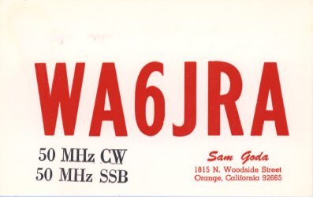
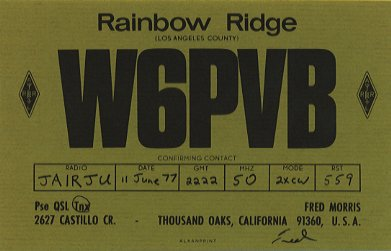

1977年の6m入感状況
[DX Report Jan-Dec.1977]
TIME:JST(UTC+0900)
Report from JA1RJU (PM95sq)
◎1977年(昭和52年)はいよいよサイクル21の上昇する時期。

01-31.Jan.1977
◎50MCでは海外とのDX QSOは無し。
01-28.Feb.1977
◎50MCでは海外とのDX QSOは無し。
01-10.Mar.1977
◎50MCでは海外とのDX QSOは無し。
11.Mar.1977
VK4ZRQ 13:21 52.051 SSB QSO
12-31.Mar.1977
◎50MCでは海外とのDX QSOは無し。
04.Apr.1977
KH6EQI 12:55 50.103 CW -13:15JST
09.Apr.1977
KH6EQI 12:50 50.103 CW Beacon
VK5ZDG 16:22 52.025 SSB QSO
VK4ZAZ 16:30 52.020 SSB QSO
VK4FU 16:35 52.010 SSB QSO
VK4JH 16:38 52.007 SSB QSO
VK3OT 16:53 52.055 SSB QSO
KH6IMH/DU2 17:00- 50.125 SSB
10.Apr.1977
VK4RO 14:40 52.- SSB
VK8ZCU 14:58 52.- SSB
VK4GS 15:05 52.- SSB
VK8ZCJ 15:28 52.060 SSB QSO
KG6JIH 15:35 50.107 SSB
KG6JFY 15:30 50.118 SSB
KG6JDX 15:50 50.135 SSB
11.Apr.1977
VK4RO 19:20 52.- SSB
12.Apr.1977
KG6JIH -- 50.- SSB
WA6YOU/DU2 -- 50.-
15.Apr.1977
KG6JIH 16:16 50.107 SSB QSO
VK4RO 18:00 52.053 SSB QSO
VK4RO 18:18 50.107! SSB QSO
16.Apr.1977
WA6YOU/DU2 14:40 50.- SSB
VK4RO 15:40 52.- SSB
VK4MS 15:40 52.- SSB
K9PNT/DU2 16:00 50.- SSB
17.Apr.1977
KH6GRU 14:40 50.- SSB
VK4RO -- 52.- SSB
KG6JDX -- 50.- SSB
KG6JFY -- 50.- SSB
18.Apr.1977
JE1AHS/JD1 16:18 50.120 SSB QSO (父島)
JD1YAA 17:03- 50.100 SSB (OP.高木)
19.Apr.1977
WA6YOU/DU2 16:00- 50.- SSB
KG6JIH -- 50.- SSB
KG6JDX -- 50.- SSB
20.Apr.1977
KG6JDX 18:00- 50.- SSB
KG6JIH -- 50.- SSB
VK4RO -- 52.- SSB
VK4GS -- 52.- SSB
21.Apr.1977
JD1YAA -- 50.- SSB
WA6YOU/DU2 17:29- 50.- SSB
26.Apr.1977
JD1YAA 16:00 50.- SSB
27.Apr.1977
KH6EQI 12:50- 50.- SSB
JD1YAA -- 50.- SSB
KG6JDX -- 50.- SSB
WA6YOU/DU2 -- 50.- SSB
28-30.Apr.1977
◎50MCでは海外とのDX QSOは無し。
01-05.May.1977
◎50MCでは海外とのDX QSOは無し。
06.May.1977
HL9WI 11:58 50.110 SSB
09.May.1977
HL9WI 14:00 50.110 SSB
23.May.1977
VS6BE 11:51- 50.- SSB
KL7HAM 12:07- 50.123 SSB QSO (-12:26JST)
28.May.1977
KG6JIH 17:30- 50.- SSB
29-31.May.1977
◎50MCでは海外とのDX QSOは無し。
05.Jun.1977
◎07:07-08:20JST頃Esのマルチホップで北米がオープン。詳細はEsマルチホップで初のW入感参照。
WB6ECD/6 07:07- 50.- SSB
WA6ABH -- 50.- SSB
WB6NMT -- 50.- CW/SSB (16局のJAとQSO)
WA6JRA -- 50.- CW
K6ODV 08:20 50.- CW


06.Jun.1977
HL9WI 12:17 50.110 SSB QSO
HL9WI 18:44 50.105 SSB QSO
12.Jun.1977
N6DX 07:16 50.095 CW QSO
W6PVB 07:22 50.095 CW QSO
WA6JRA 07:58 50.100 CW


17.Jun.1977
WA6JRA 08:20 50.100 CW (-08:30JST)
23.Jun.1977
VK8ZCJ 22:44 52.- SSB (JA6RURがQSO)
27.Jun.1977
W7GRH 07:42 50.100 CW (JA7GNI.JA7MIT等がQSO)
01.Jul.1977
KL7HAM 08:40 50.100 SSB QSO
HL9WI 20:59 50.110 SSB QSO
KG6JIH 21:22 50.110 CW QSO
03.Jul.1977
HL9WI 15:30 50.130 SSB QSO
10.Jul.1977
W6PVB 07:30 50.- CW
KL7HAM 07:57 50.- SSB
10.Jul.1977
WB6NMT 07:30- 50.- CW
WA6JRA -- 50.100 CW
K6RNQ -- 50.- SSB
KL7HAM 08:30 50.- SSB
14.Jul.1977
KL7HAM 08:31 50.110 SSB QSO
17.Jul.1977
KL7AIZ 08:54 50.- SSB
31.Jul.1977
KG6JIH 07:50 50.110 SSB QSO
01-31.Aug.1977
◎50MCでは海外とのDX QSOは無し。
08.Sep.1977
VK8ZCJ 21:20- 52.050 SSB
11.Sep.1977
WB5LBJ/DU6 16:13 50.110 SSB QSO
12.Sep.1977
WB5LBJ/DU6 17:03 50.110 SSB
23.Sep.1977
KC6CW 16:35 50.114 SSB QSO (Ponape E.C.I)
24-30.Sep.1977
◎50MCでは海外とのDX QSOは無し。
01.Oct.1977
VK8ZCJ 19:30 52.050 SSB
06.Oct.1977
P29HV 21:05 52.- SSB QSO (6m #019)
07.Oct.1977
P29HV 20:00 52.- SSB
08-31.Oct.1977
◎50MCでは海外とのDX QSOは無し。
01-12.Nov.1977
◎50MCでは海外とのDX QSOは無し。
13.Nov.1977
VK3ZQV 12:54 52.- SSB QSO
VK3AMK 12:56 52.- SSB QSO
VK3AQR 13:02 52.- SSB QSO
VK7JV 13:03 52.- SSB QSO
VK7ZAH 13:11 52.- SSB QSO
VK3AQR 13:29 52.- SSB QSO
VK3AKK -- 52.- SSB
VK7DA -- 52.- SSB
VK3PS -- 52.- SSB
VK3VL 13:30 52.- SSB QSO
VK3AIH 13:34 52.- SSB QSO
14.Nov.1977
KH6EQI 09:30- 50.- CW Beacon
17.Nov.1977
VK7DA 16:50- 52.- SSB
VK7ZIF -- 52.- SSB
VK8ZCJ -- 52.- SSB
VK8VV -- 52.- SSB
20.Nov.1977
VK7JV 13:15 52.- SSB QSO
VK7ZIF 13:19 52.- SSB QSO
VK7LZ 13:23 52.- SSB QSO
22.Nov.1977
KH6EQI 09:30 50.- CW Beacon
VK4GI 13:33 52.- SSB QSO
VK4AZE 13:47 52.- SSB QSO
23-30.Nov.1977
◎50MCでは海外とのDX QSOは無し。
03.Dec.1977
VK3AKK 12:32 52.040 SSB QSO
VK5MT 12:37 52.032 SSB QSO
VK5LP 12:40 52.032 SSB QSO
VK3ZHH 12:42 52.032 SSB QSO
VK3VL 12:44 52.032 SSB QSO
VK3YFL 12:50 52.032 SSB QSO
VK7ZAH 12:53 52.032 SSB QSO
ZL4LV 13:03 52.047 SSB QSO
ZL3AAN 13:10 52.026 SSB QSO
P29HV 15:43 52.050 SSB QSO
VK7ZIF 15:47 52.040 SSB QSO
VK3ZYO 15:51 52.040 SSB QSO
VK3BBB 15:56 52.040 SSB QSO
VK3ANY 16:03 52.045 SSB QSO
VK7JG 16:13 52.045 SSB QSO
VK3OT -- 52.050 SSB
VK3AMK -- 52.038 SSB
04-31.Dec.1977
◎50MCでは海外とのDX QSOは無し。
|